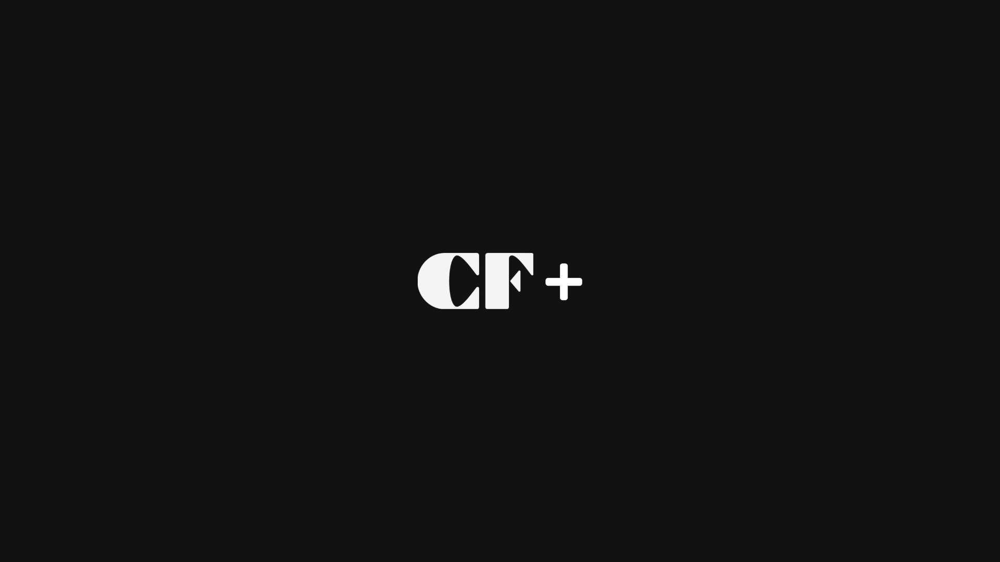
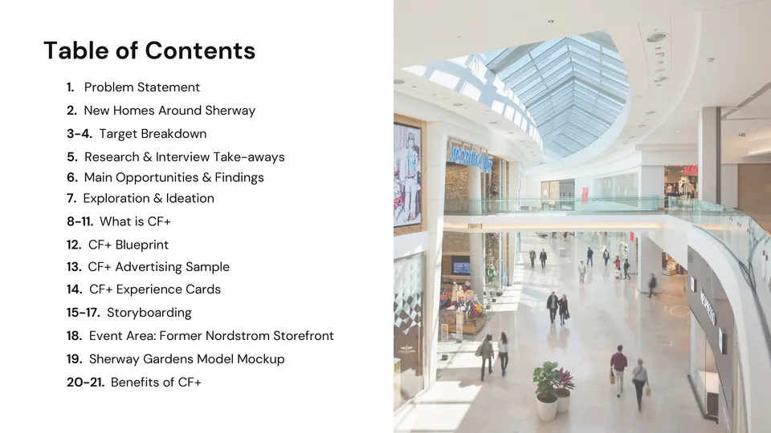

Seasonal Events & Loyalty Program
Cadillac Fairview +
- Role
- Service Designer
- Timeline
- Sep to Dec 2024
- Client
- CF Sherway Gardens
- Tools
- Figma, Canva
A mall worth the trip
CF+ is a seasonal events and loyalty program that turns empty space at CF Sherway Gardens into frequently rotating pop-up events celebrating Canadian culture. Every event is run by CF representatives and rewards visitors for taking part, making the mall a place to belong, not just a place to buy.
The program was designed for the new Canadians moving into the thousands of homes planned around Sherway, and is built to scale to other CF malls. A mobile app was explored early on, but we set it aside for physical Experience Cards and in-person guidance, so the program stays accessible to older visitors and to anyone still finding their way around.
A group project with Brandon Siow, Alex Chang, Shaizaan Prasla and Seong Han Lee.
Pitch

PDF presentation, 21 MB
CF+ Final Pitch
The full proposal presented to Cadillac Fairview, from research on the Sherway redevelopment to event storyboards and the service blueprint.
Open the pitch deckPROBLEM STATEMENT
Thousands of new homes are rising around CF Sherway Gardens, but to the new Canadians moving in, it is just another place to shop.
How might we transform CF Sherway Gardens into a public realm where new Canadians can connect to their new home?
Research & findings
I was a service designer on a team of five. We shared site research, interviews and synthesis, and I focused on the in-person side of CF+: the rotating event program, how a visitor moves through each event, and the CF representatives who run it.
We studied the site, the redevelopment plans around it and the people moving in. Interviews with new Canadians, most of them students new to the GTA, were coded by how often each concern came up. Three themes stood out.
- 100%Rely on transit or walking
- 75%Live 30 minutes or more from the nearest mall
- 63%Feel uneasy in public spaces
- 38%Face language barriers when out
-
01
34.8%of concerns raised
The purpose gap
Lack of purpose came up more than any other concern. Malls back home often double as places for community and recreation. Here, interviewees described the mall as a “last ditch effort to kill time”.
-
02
17.4%of concerns raised
The impersonal mall
Canadian malls tend to blur into one another. Interviewees wanted a space that felt safe, clean and park-like, with an identity worth remembering.
-
03
14.5%of concerns raised
The cost of the commute
Every interviewee relied on transit or walking, while Sherway is built around the car. Transit is out of CF's hands, so the visit itself has to make the trip worth it.
Interviews
Site research
Who we designed for
Main opportunities
-
01
Make the mall a community hub
Host cultural events, workshops and recreation, so there is a reason to visit beyond shopping.
Precedents: Lunar Festival at Kingsway Mall, Today at Apple
-
02
Make the trip worth taking
Reward the people who travel furthest and stay longest, through incentives, amenities and offers they can only get on site.
Precedents: IKEA Family, “Stay Longer, Save More” offers
-
03
Make the space feel welcoming
Bring in greenery, seating and cultural design, so the mall feels like a place to spend time and not only money.
Precedents: Devonian Gardens, Jewel Changi Airport
Solution
CF+ turns the former Nordstrom storefront and other empty spaces into a rotating program of pop-up events, each celebrating a part of Canadian culture or a key holiday. Visitors are rewarded for taking part and for shopping during the event.
Rotating seasonal events
Each season brings a new theme, such as Canada Day, Canadian Cuisine and Canadian Winter. The decor, stations and collectibles change every time, while the format stays the same, so there is always a new reason to come back.
How an event works
-
01
Discover
Posters, in-mall screens and CF social channels announce each event in the weeks before it opens.
-
02
Welcome
CF representativeA CF representative greets each visitor, explains the event and hands over that event's Experience Card.
-
03
Explore
Six stations around the mall each add a marker to the card: workshops, tastings, performances and games.
-
04
Redeem
CF representativeA full card goes back to a representative for a collectible. Spending during the event also earns points toward discounts and free parking.
-
05
Reflect
CF representativeRepresentatives check in on the visit, and a five-question survey feeds into planning the next event.
Event storyboards
The event space
The former Nordstrom storefront, left mostly empty since the store closed, becomes the main event area. Smaller stations spread into the central hub, the hallways and the spaces in front of anchor stores, so the event pulls people through the whole mall.
CF representatives
CF+ is more than an event and a card. Every event is run by CF representatives, called CF Guides in our service blueprint, who turn an unfamiliar mall into a place where someone is expecting you.
For interviewees facing language barriers or feeling uneasy in public, a friendly, easy-to-spot person lowers the barrier to joining in. Representatives wear a recognisable CF uniform and are trained in cultural sensitivity and several languages.
-
01
Welcome and explain
Greet every visitor at the event entrance, explain what is on and hand out the Experience Card.
-
02
Guide in more than one language
Approach visitors who seem lost, offer maps and directions, and speak several languages, so no one has to ask a stranger for help.
-
03
Reward and listen
Check completed cards, hand out collectibles and ask how the visit went, then follow up with a short feedback survey.
-
04
Read the room
Keep an eye on which areas are busy, manage crowds gently, and pass on what should change for the next event.
On the floor
Staged demonstrations of a CF+ event, and a storyboard of a visit showing where guides step in to help.
Service blueprint
The blueprint maps each stage of a visit against the people, touchpoints and behind-the-scenes work it depends on. CF Guides lead the two moments where visitors are most likely to give up: finding the event and understanding how it works.
Service system
Every event starts with a person, not a poster.
Outcome
-
01
A reason to come back
A new theme every season, with time-limited merchandise and collectibles, gives visitors a reason to return. Feedback from each event shapes the next one.
-
02
Value on every side
New Canadians get a warm introduction to Canadian culture and retail. Retailers and local vendors gain foot traffic and exposure. CF fills empty space and builds loyalty.
-
03
A framework that scales
Standard event zones, reusable decor and permanent kiosks and screens keep each event simple to run. The same structure can roll out to other CF malls as Sherway's neighbourhood grows.